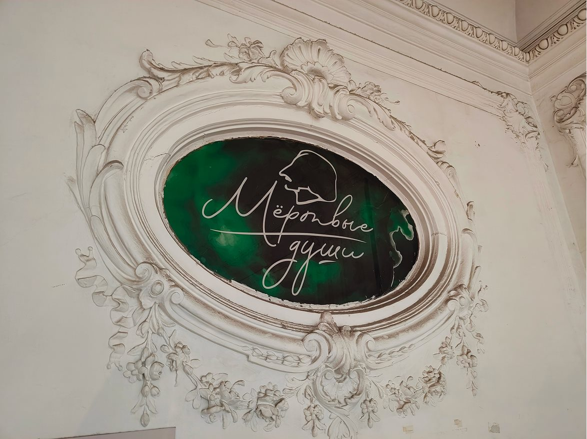
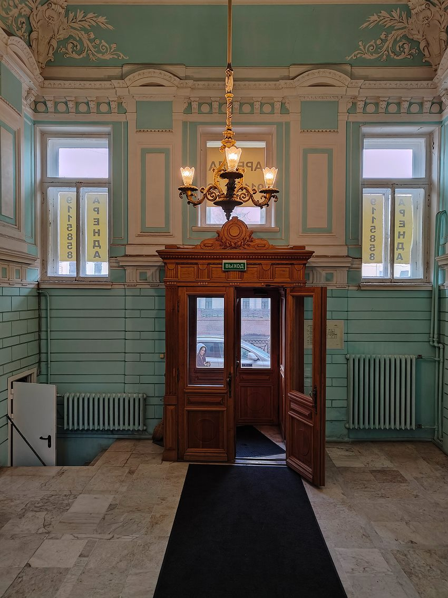
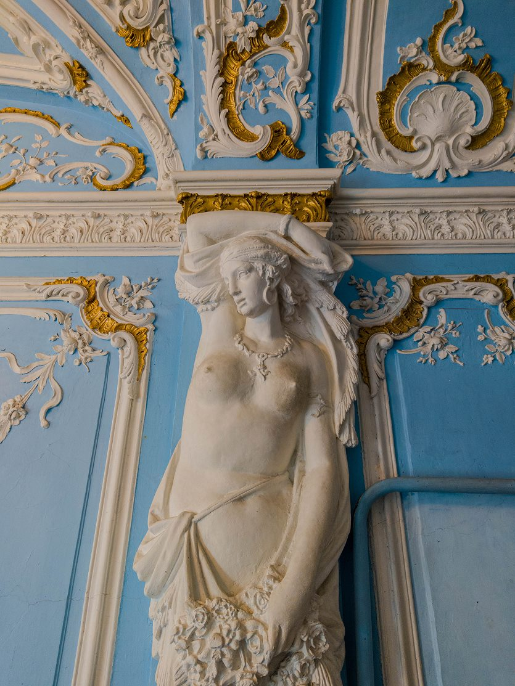
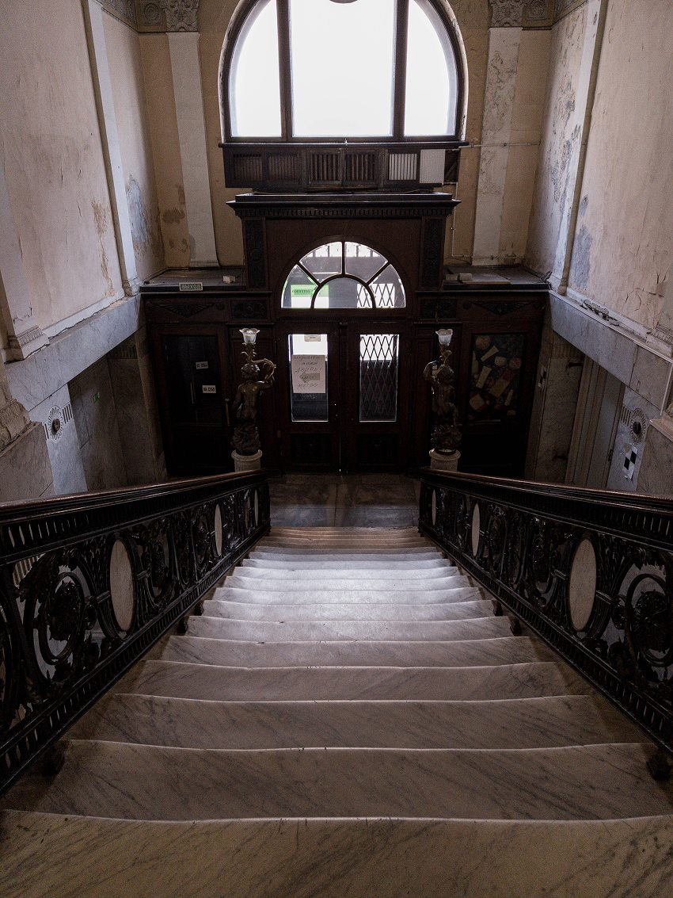
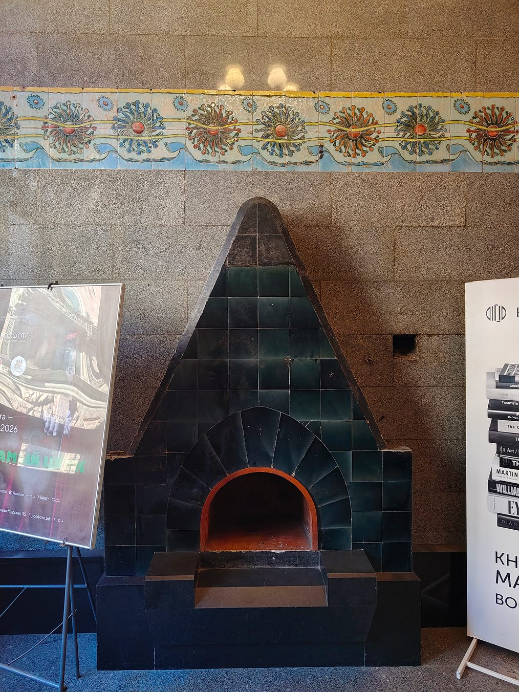

Каталог парадных
Парадные Санкт-Петербурга
Подборка известных и атмосферных парадных города с адресами, историей, фотографиями и практической информацией для самостоятельного посещения.
Найдено 6 объектов
 Улица Ломоносова 14
Улица Ломоносова 14




По выбранным параметрам ничего не найдено. Попробуйте изменить фильтры.
Не знаете с чего начать?
Мы собрали готовые маршруты по самым интересным парадным. Прогулки составлены по районам и темам.